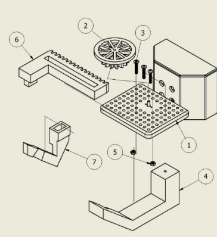
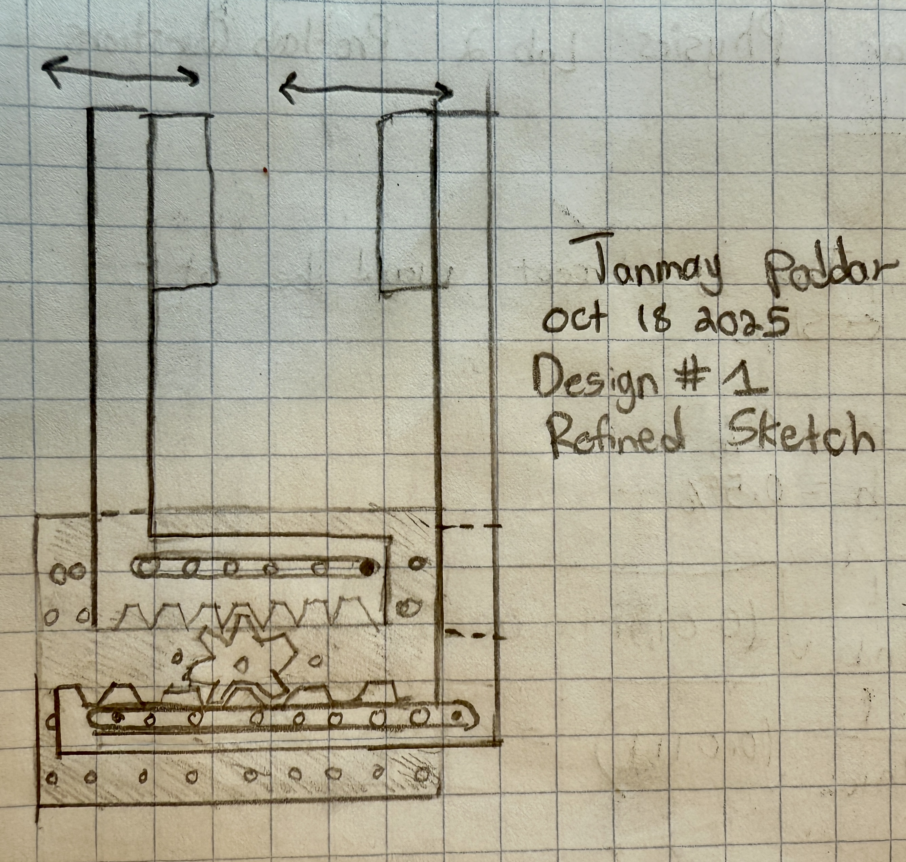
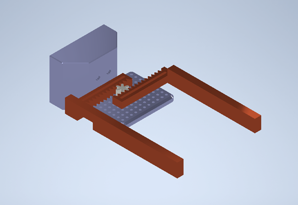
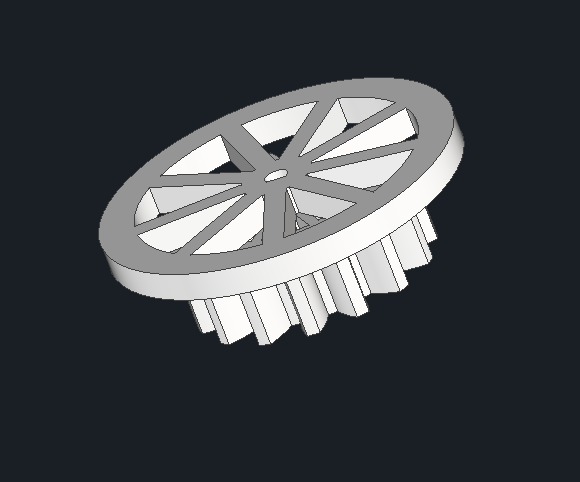
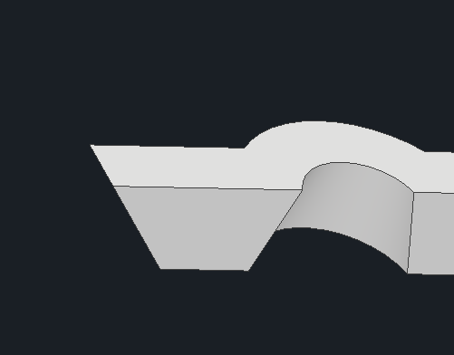
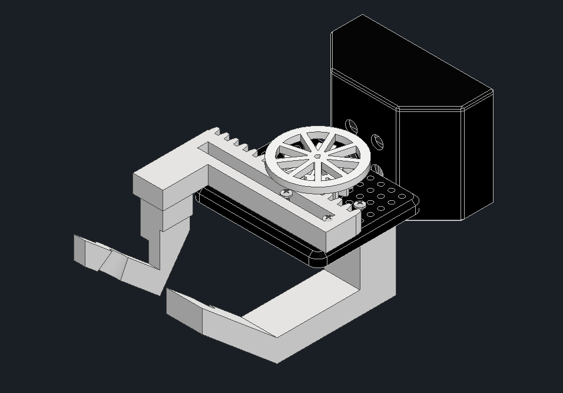

The purpose of this project was to design a universal end-effector that can be used to grab, lift, and subsequently move objects of varying shape and dimensions to a different location. The end-effector was mounted to a Q-Arm and paired with a complete Python codebase for automated item purchase and retrieval.
Create a universal solution for use in an e-commerce warehouse — retrieving items from shelving and moving them onto a conveyor belt for shipping.

The end-effector model couldn't be loaded automatically. You can browse for the .stp or .stl file manually below.
I was the project manager for this project and oversaw the progress and completion of tasks and deliverables, while ensuring participation from all group members.
A tactic I found invaluable was to designate each team member as the lead for a specific task — the CAD model, or programming the Q-Arm. I took responsibility for integrating the different elements together and ensuring all members understood the current timeline.
The program for the Q-Arm began with creating flow charts for all individual tasks and the main menu. I personally created the flow chart for the authenticate function, which verifies user credentials against a file of encrypted entries.
The design process began with each member creating a concept sketch and CAD model. My design — using 2 arms linked by a rack and pinion — was selected to proceed with.
A principle I implemented from the beginning was to reduce the number of moving parts. As a team we iterated on the initial design with two major modifications: fixing one arm permanently, and hanging both arms downward at an angle. The angle was calculated using trigonometry to be approximately 45 degrees.
I designated a member to be the CAD lead who drove development of the 3D model from the approved design.


With the initial prototype, we found that the claw would pivot against the edge of the mounting plate and slip off the gear due to the torque of grabbed objects. We redesigned the gear with a cap on top to maintain contact between the rack and the pinion.
This modification highlighted the importance of restricting the degrees of freedom for parts.
We also added a conical section into both the fixed and moving arms, ensuring a firmer grasp — this proved successful, enabling us to pick up the cone object.



In total we built 4 prototypes. The first two tested rack-and-pinion principles, iterating on degree-of-freedom restrictions. The third was functional but heavy — the small motor lacked enough torque. The fourth was an optimized version with less material.
A practice I learned: overbuild parts first, then optimize after you get the product to function.
The fixed arm was intentionally left slightly overbuilt. During testing, errors in Q-Arm manipulation caused the effector to slam into the table; the overbuilt fixed arm transferred force through the mounting plate rather than breaking. If it did break, reprinting a single arm was far simpler than reprinting the entire rack-and-pinion assembly.
We also split the moving arm into 2 pieces, allowing one piece to be remade independently — this significantly decreased prototype iteration time.
Many setbacks arose from overcomplicating elements of the task. My initial sketch had 2 moving claws. A teammate pointed out we only needed one, which meant the full torque of the motor could press the object against the fixed claw. Initial testing confirmed the single claw was the right call.
This reinforced the idea that the simplest solution is often the best solution.
A personal shortcoming as a leader was failing to ensure enough time for testing. We had one 2-hour in-class period, but Q-Arm issues beyond our control left us only ~45 minutes for full integration testing. This led to a failure on demonstration day — which we fixed in under 60 seconds — but a mark deduction nonetheless.
This project underscored the importance of time management and the outsized role it plays in overall project success.